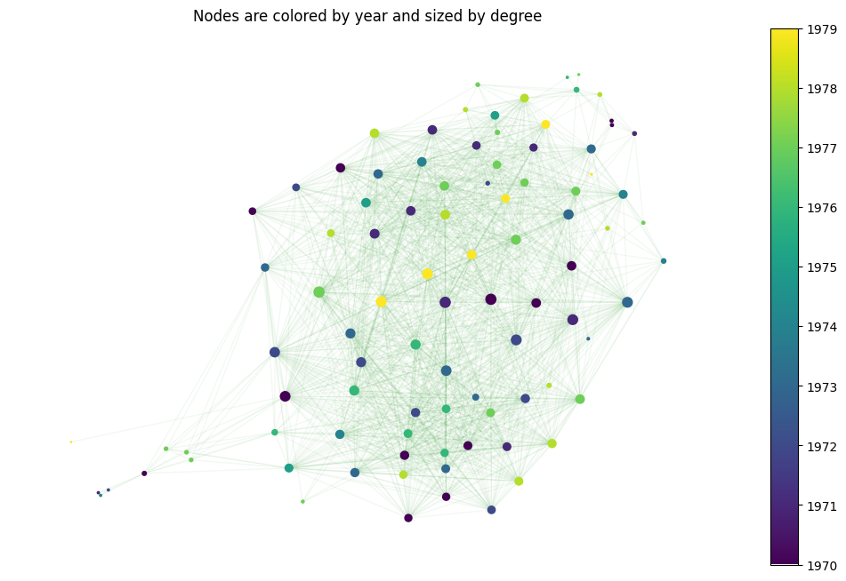

The 70's
If the 60’s was the decade of social revolution, the 70’s has as main character a digital transformation. Apple has just arrived, now we don’t just have big TVs at home but also big chunky computers! The spread of video games, kitchen devices, bigger use of planes…the society was transforming drastically. But, did all these changes affect music?
It certainly did! Although music did not change as much as the society of the moment, we can see changes in the most listened genres. Rock still stands up front but not surprisingly pop is slightly taking over!
This digital revolution can be seen in the lyrics too. Televise is one of the top words found! Pop music brings “dancing”. Also, the political issues make their way into the songs: terms like fear, respect, peace, resist… take part of the show.